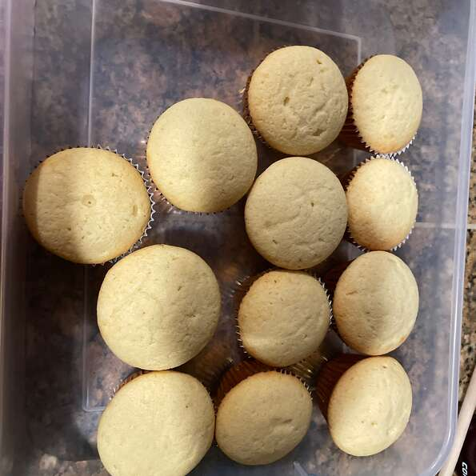

Description
The best cupcakes you've ever seen!
Ingredients
- 1 cup white sugar
- 1/2 cup butter
- 2 eggs
- 2 teaspoons vanilla extract
- 1 1/2 cups all-purpose flour
- 1 3/4 teaspoons baking powder
- 1/2 cup milk/li>
Steps
- Preheat oven to 350 degrees F (175 degrees C). Grease and flour a 9x9 inch pan or line a muffin pan with paper liners.
- In a medium bowl, cream together the sugar and butter. Beat in the eggs, one at a time, then stir in the vanilla. Combine flour and baking powder, add to the creamed mixture and mix well. Finally stir in the milk until batter is smooth. Pour or spoon batter into the prepared pan.
- Bake for 30 to 40 minutes in the preheated oven. For cupcakes, bake 20 to 25 minutes. Cake is done when it springs back to the touch.
Index